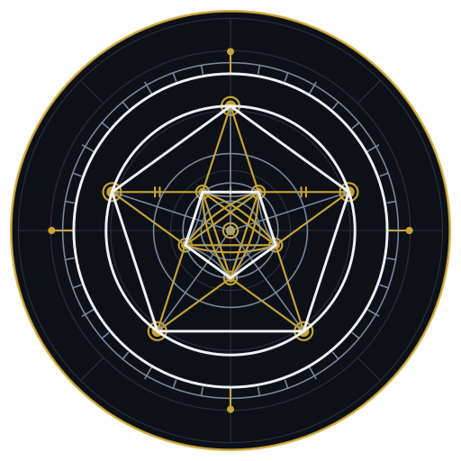

Divine Proportion Discovery¶

geometor.divine is an automated symbolic discovery engine that scans exact geometric constructions to uncover hidden golden sections ($\phi = \frac{1+\sqrt{5}}{2}$), harmonic ranges, and multi-point proportional chains. Alongside its Python analysis toolkit, this archive curates a machine-certified catalog of forty-five ruler-and-compass constructions spanning Euclid, Ptolemy, Kepler, and modern Cut-the-Knot geometers—all built in 100% exact SymPy algebra over $\mathbb{Q}(\sqrt{5})$ and its radical extensions.
Catalog & Discovery Engine¶
Mathematical Catalog · 7 Geometric Families · 45 Constructions
Catalog of Golden Ratio Constructions — Forty-five certified constructions organized across seven geometric families—from Euclid II.11 and minimal five-step compass divisions to equilateral hexagons, sangaku circle packings, and Ptolemy’s pentagon—certifying 129 exact golden sections and 33 connected golden chains.
Symbolic Analysis Engine · Python API & Synthesis Guides
Automated Golden Section & Chain Scanner — Build any geometric model with geometor.model and scan every collinear point sequence for extreme and mean ratio divisions, Rational Trigonometry quadrance ratios ($Q_{\text{long}} / Q_{\text{short}} = \phi^2$), and maximal harmonic golden chains.
Key Features¶
100% Exact Symbolic Algebra
Every segment ratio is certified over $\mathbb{Q}(\phi)$, $\mathbb{Q}(\sqrt{2}, \phi)$, $\mathbb{Q}(\sqrt{3}, \phi)$, and $\mathbb{Q}(\sqrt{\phi})$ with zero floating-point approximation.
Synchronized Synthesis & Code Tracks
Toggle any construction between its mathematical proof with bidirectional :g: diagram highlighting and the complete executable Python script that builds it.
Golden Chains & Quadrance Metrics
Compare all 45 entries by algebraic field, Lemoine Géométrographie simplicity, elementary loci, and discovered golden chains in one comparative table.
Reference & Project¶
Scholarly Apparatus
People — Profiles of Euclid, Ptolemy, Kepler, George Odom, Kurt Hofstetter, Alexander Bogomolny, and contemporary contributors
Bibliography — Classical treatises, journal papers, and Cut-the-Knot archival citations
Glossary — Definitions of extreme and mean ratio, golden chains, quadrance, and Lemoine simplicity
About This Project
About This Edition — Scope, symbolic methodology, and links across the GEOMETOR ecosystem
Using This Edition — Guide to synchronized tracks, interactive vector plates, and Python discovery API
Comparative Table — Complete metrics across all 45 cataloged constructions